Aquella vez · Manual de español
Unidad 7
El pasado: ¿qué hiciste?
¿Qué hiciste ayer?
Lee el diálogo y contesta
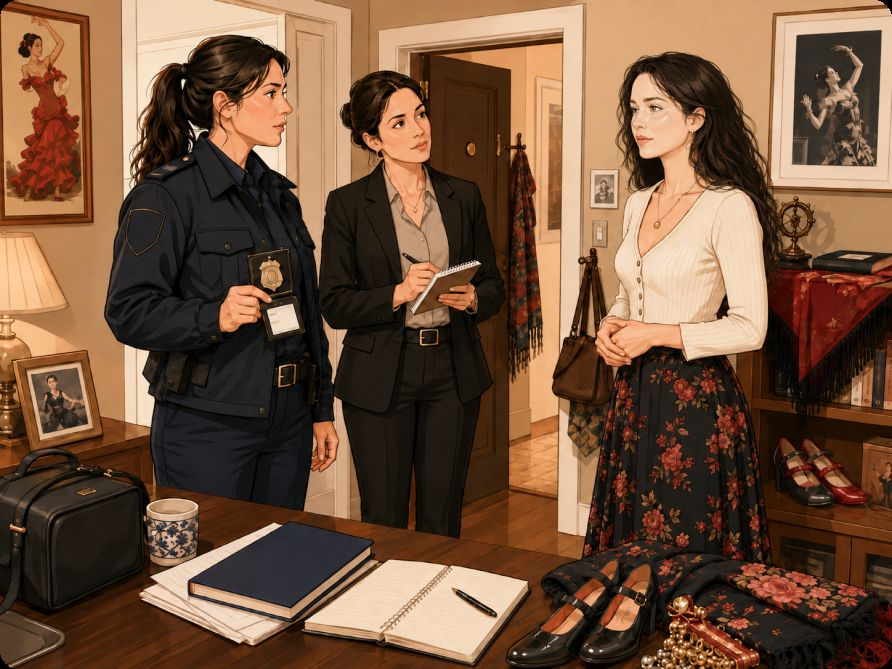
PolicíaBuenas tardes. ¿Usted es Tatiana?
TatianaSí, soy yo. ¿Qué ocurre?
PolicíaNecesitamos hacerle algunas preguntas.
TatianaClaro… pero no entiendo. ¿Pasa algo?
Policía¿Qué hizo usted ayer?
TatianaAyer fue un día normal. Por la mañana me levanté temprano, desayuné y fui a la oficina.
Policía¿A qué hora empezó a trabajar?
TatianaEmpecé a trabajar a las nueve. Trabajo en una oficina. Revisé documentos, escribí algunos correos y hablé con mis compañeros.
Policía¿Y después del trabajo?
TatianaDespués del trabajo fui a mi clase de español. Estoy aprendiendo español porque me gustan mucho los idiomas.
Policía¿Qué hizo después de la clase?
TatianaFui a una escuela de danza. Primero bailé flamenco y después practiqué danzas de la India. Me gusta bailar porque me ayuda a relajarme.
Policía¿Volvió directamente a casa?
TatianaSí. Volví a casa, cené algo ligero y vi una película. Después me acosté.
Policía¿Estuvo en internet?
TatianaSí, un poco. Miré mis mensajes y estudié vocabulario en español. Pero nada especial.
PolicíaEntiendo.
TatianaDisculpe, pero… ¿por qué me preguntan todo esto?
PolicíaPorque ayer por la noche su rostro apareció en las pantallas de varios sitios web jaqueados.
Tatiana¿Mi rostro? Eso es imposible.
PolicíaPor eso estamos aquí. Queremos saber si usted sabe algo.
TatianaNo sé nada. Yo solo fui a trabajar, estudié español y bailé. No jaqueé ningún sitio web.
PolicíaEntonces tendremos que investigar más.
TatianaPor favor, dígame la verdad. ¿Estoy en peligro?
PolicíaTodavía no lo sabemos.
EjercicioPreguntas
- ¿Quién llega a la casa de Tatiana?
- ¿Qué le pregunta la policía a Tatiana?
- ¿Qué hizo Tatiana por la mañana?
- ¿Dónde trabaja Tatiana?
- ¿Qué estudia Tatiana después del trabajo?
- ¿Por qué Tatiana aprende español?
- ¿Qué bailes practica Tatiana?
- ¿Qué hizo Tatiana cuando volvió a casa?
- ¿Qué pregunta Tatiana a la policía?
- ¿Por qué la policía está investigando a Tatiana?
- ¿Dónde apareció el rostro de Tatiana?
- ¿Tatiana sabe algo sobre los sitios web jaqueados?
- ¿Qué novela puede leer una persona si le intriga esta historia?
- ¿Quién es el autor de "La chica del retrato"?
EjercicioCompleta las oraciones con la forma correcta de ir o estar
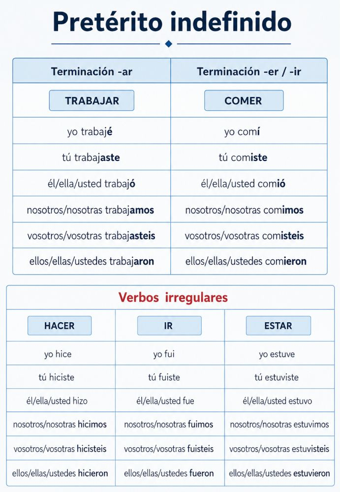
Ayer Luis al museo.
Nátasha en casa toda la tarde.
Nosotros al parque el domingo.
Marcos en la oficina hasta las ocho.
Alicia y María al teatro.
Yo muy ocupado ayer.
Tú a la clase de español.
Carlos enfermo la semana pasada.
Vosotros en Madrid en verano.
Ellos al restaurante después del trabajo.
Tatiana en la escuela de danza.
Robert y Luis a Mendoza.
Yo al cine con mis amigos.
Usted en la reunión ayer.
Las chicas a una cafetería.
Nosotros muy cansados después del viaje.
EjercicioIndica lo que hizo Tatiana ayer. Usa las pistas.
- levantarse
- desayunar
- trabajar en una oficina
- aprender español
- bailar flamenco
- practicar danzas de la India
- cenar
- ver una película
- acostarse
EjercicioPractica con tu compañero/a. Pregunta qué hizo ayer
Hace frío
EjercicioObserva el estado del tiempo y contesta las preguntas
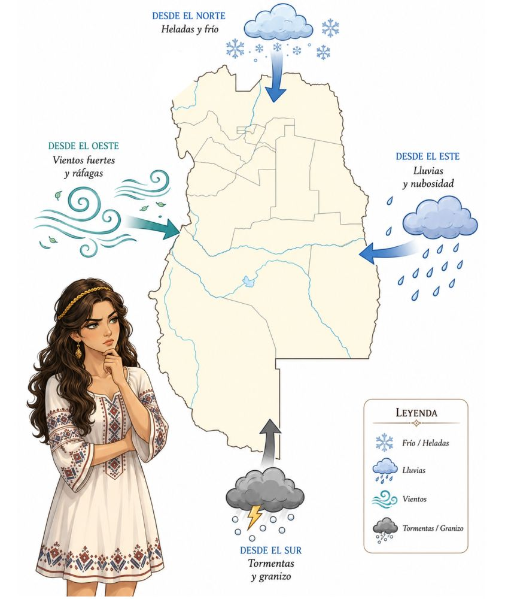
Algo extraño está sucediendo en Mendoza. Todos hablan ruso y español mezclados. El clima se volvió loco.
Desde el oeste viene un viento muy fuerte. Hay ráfagas y el aire mueve los árboles, las hojas y las ventanas. La gente dice: "¡Qué viento, какой ужас!"
Desde el este llega la lluvia. Hay muchas nubes y las calles están mojadas. Algunas personas corren con paraguas y otras miran el cielo con preocupación.
Desde el sur viene el granizo. Hay tormentas, rayos y piedras de hielo. Es peligroso caminar por la calle, porque el tiempo cambia muy rápido.
Desde el norte llega una helada. Hace mucho frío y caen copos de nieve. Parece invierno, pero en otras partes de Mendoza llueve, hay viento o cae granizo.
Nátasha mira el mapa con sospecha. No entiende qué está pasando. En el norte hace frío, en el sur hay tormenta, en el este llueve y en el oeste hay viento.
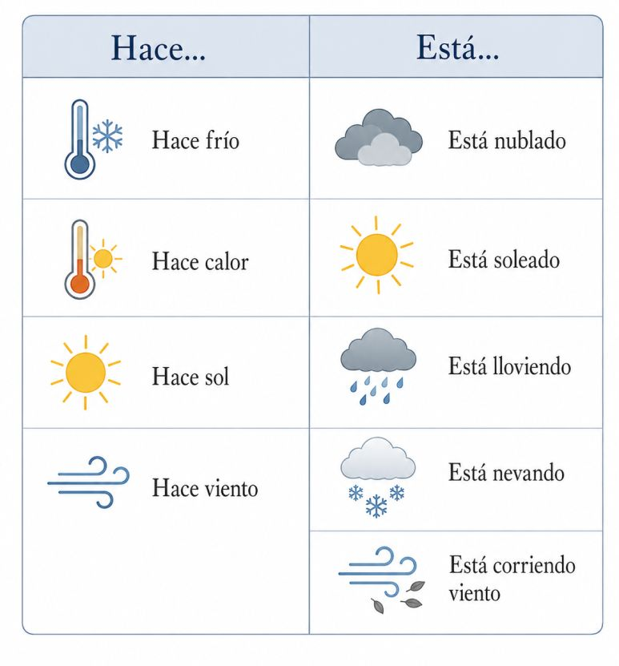
- ¿Qué está sucediendo en Mendoza?
- ¿Qué idiomas hablan las personas?
- ¿Cómo está el clima?
- ¿Qué viene desde el oeste?
- ¿Qué llega desde el este?
- ¿Qué viene desde el sur?
- ¿Qué llega desde el norte?
- ¿Por qué es peligroso caminar por la calle?
- ¿Qué mira Nátasha con sospecha?
- ¿Qué cosa no entiende Nátasha?
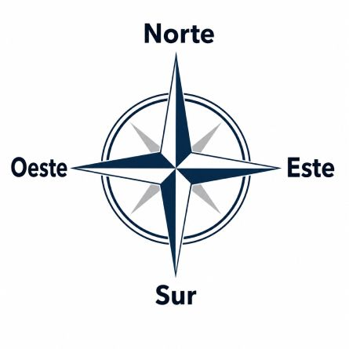
EjercicioRelaciona las descripciones con el estado del tiempo
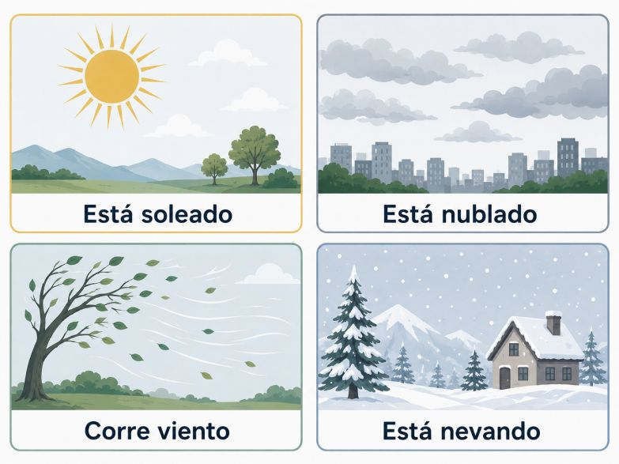
A. Hace frío. Las calles están blancas y la gente lleva abrigo, gorro y bufanda.
B. El cielo está gris. No hace mucho sol y el día parece un poco triste.
C. El día es claro y agradable. Hay mucha luz y la gente quiere salir a caminar.
D. El aire se mueve mucho. Las hojas vuelan y es difícil caminar tranquilo.
EjercicioCompleta el pronóstico
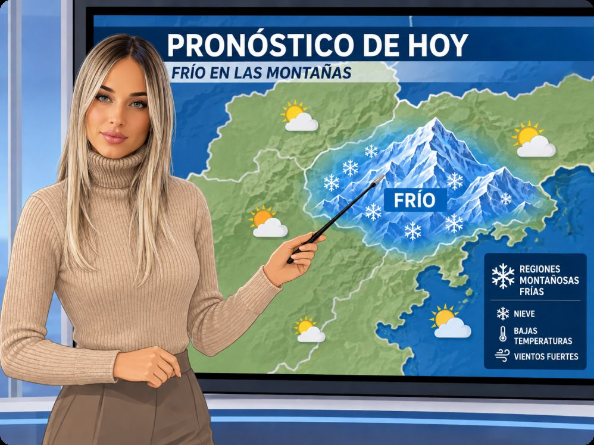
Usa las palabras desordenadas para completar el texto.
Palabras: frío — nieve — viento — nublado — sol — temperatura — abrigo — gorro — guantes — montaña — helado — nevar
Hola. Este es el pronóstico del tiempo para la misteriosa.
Hoy hace mucho en la montaña. Hay en las partes altas y también corre . El cielo está un poco , pero en algunos momentos también hay .
Por la mañana, la es muy baja. Por eso, es importante llevar , y . Por la tarde, sigue haciendo frío. El viento viene de la montaña y el aire está muy .
Esta noche, la montaña misteriosa estará muy fría. Puede otra vez.
Tengan cuidado y hasta mañana.
Las estaciones del año
Lee el texto y contesta las preguntas.
La primavera es una estación alegre. Hace buen tiempo, hay flores y los árboles están verdes. Los días son más largos y muchas personas salen a pasear.
El verano es la estación más calurosa. Hace mucho sol y las personas van a la playa, a la piscina o al parque. También es una época de vacaciones.
El otoño es una estación tranquila. Hace más fresco, las hojas de los árboles cambian de color y caen al suelo. Muchas personas toman té o café caliente.
El invierno es la estación más fría. En algunos lugares nieva y en otros llueve mucho. La gente usa abrigo, bufanda y guantes. También pasa más tiempo en casa.
EjercicioPreguntas
- ¿Cómo es la primavera?
- ¿Qué hacen muchas personas en verano?
- ¿Qué pasa con las hojas de los árboles en otoño?
- ¿Cuál es la estación más fría del año?
- ¿Qué ropa usa la gente en invierno?
Mi día de ayer
Lee los textos y contesta las preguntas.
Marcos
Ayer tuve un día complicado. Me levanté muy temprano, pero no encontré mis llaves. Desayuné muy rápido y salí de casa con prisa.
Después tomé el metro, pero hubo un problema en la línea. Llegué tarde al trabajo. Mi jefe me regañó porque tenía una reunión importante.
Durante la mañana trabajé mucho. Revisé documentos, escribí un informe y llamé a dos personas. Por la tarde fui a una cafetería, pero no descansé. Tuve que seguir investigando un caso.
Fue un día difícil, pero al final encontré una pista importante.
Alicia
Ayer tuve un día muy interesante. Me levanté tranquila, desayuné té con tostadas y fui a mi consulta. Trabajo como astróloga y me gusta escuchar a las personas.
Por la tarde vino una clienta muy curiosa. Ella quería saber muchas cosas sobre su futuro. Le hice algunas preguntas, miré su carta astral y escribí notas en mi cuaderno.
La clienta habló de amor, trabajo y viajes. Yo escuché con atención y le expliqué que las estrellas pueden dar señales, pero las personas también toman sus propias decisiones.
Después de la consulta, caminé un poco por la ciudad. Fue un día especial y misterioso.
Vasily
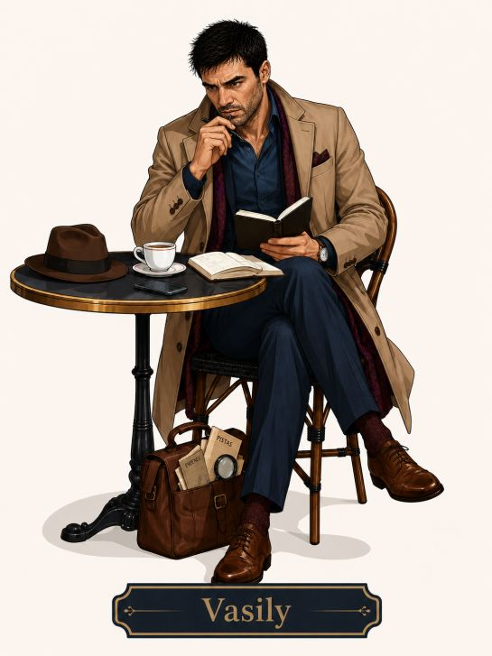
Ayer tuve un día buenísimo. Me levanté tarde, tomé café y me vestí con elegancia. Después salí de casa porque tuve tres citas con mujeres.
Primero fui a un restaurante. Allí hablé con una mujer muy simpática. Después fui a un parque y hablé con otra mujer sobre viajes. Por la noche fui a un café elegante y conocí a una tercera mujer.
Hablamos mucho. Yo escuché, hice preguntas y observé todos los detalles. Para mí, cada palabra fue importante.
Pero no fue un día romántico. Ir a citas es parte de mi trabajo. Estoy buscando a una ladrona muy inteligente. Ella cambia de nombre, cambia de ropa y estafa a los hombres.
Ayer no encontré a la ladrona, pero encontré una pista nueva.
EjercicioPreguntas
- ¿Quién tuvo un día complicado ayer?
- ¿Qué cosa no encontró Marcos en casa?
- ¿Por qué llegó tarde Marcos al trabajo?
- ¿Quién regañó a Marcos?
- ¿Quién trabaja como astróloga?
- ¿Quién visitó la consulta de Alicia?
- ¿Qué quería saber la clienta de Alicia?
- ¿Qué cosa miró Alicia durante la consulta?
- ¿Quién tuvo tres citas con mujeres?
- ¿Adónde fue Vasily primero?
- ¿Por qué Vasily va a citas?
- ¿Qué encontró Vasily al final del día?
EjercicioSeñala verdadero o falso
- Marcos tuvo un día complicado.
- Marcos encontró sus llaves rápidamente.
- Marcos llegó tarde al trabajo.
- El jefe de Marcos lo felicitó.
- Alicia trabaja como astróloga.
- Una clienta curiosa visitó a Alicia.
- Alicia miró una carta astral.
- Alicia no habló con nadie ayer.
- Vasily tuvo tres citas con mujeres.
- Vasily fue a un restaurante, a un parque y a un café.
- Vasily tuvo un día romántico normal.
- Vasily busca a una ladrona inteligente.
EjercicioPreguntas para el alumno
- ¿Cómo fue tu día ayer?
- ¿A qué hora te levantaste?
- ¿Qué desayunaste?
- ¿Adónde fuiste ayer?
- ¿Estuviste en casa, en clase o en el trabajo?
- ¿Hablaste con alguien interesante?
- ¿Estudiaste español ayer?
- ¿Viste una película o una serie?
- ¿Tuviste un día tranquilo o complicado?
- ¿Qué fue lo más interesante de tu día?
Gramática
Pretérito indefinido
Usamos el pretérito indefinido para hablar de acciones terminadas en el pasado. Se usa mucho con expresiones como:
ayer · anteayer · el lunes · la semana pasada · el mes pasado · el año pasado · anoche · en 2020 · hace dos días
| Persona | trabajar (-AR) | comer (-ER) | vivir (-IR) |
|---|---|---|---|
| yo | trabajé | comí | viví |
| tú | trabajaste | comiste | viviste |
| él / ella / usted | trabajó | comió | vivió |
| nosotros/as | trabajamos | comimos | vivimos |
| vosotros/as | trabajasteis | comisteis | vivisteis |
| ellos / ellas / ustedes | trabajaron | comieron | vivieron |
1. Verbos regulares en -AR
Ayer trabajé mucho. · Marcos llegó tarde al trabajo. · Nosotros desayunamos en casa.
2. Verbos regulares en -ER
Ayer comí en un restaurante. · Tatiana comió algo ligero. · Ellos comieron muy tarde.
3. Verbos regulares en -IR
Viví en Madrid dos años. · Alicia escribió notas en su cuaderno. · Ellos salieron de casa temprano.
4. Terminaciones
| Persona | -AR | -ER / -IR |
|---|---|---|
| yo | -é | -í |
| tú | -aste | -iste |
| él / ella / usted | -ó | -ió |
| nosotros/as | -amos | -imos |
| vosotros/as | -asteis | -isteis |
| ellos / ellas / ustedes | -aron | -ieron |
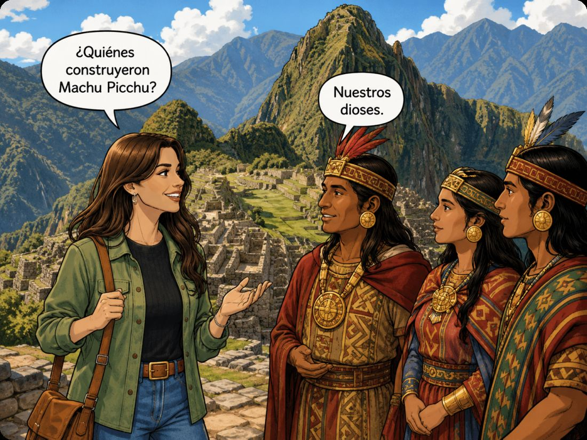
5. Verbos irregulares importantes
Ser / Ir — ser e ir tienen la misma forma en pretérito indefinido.
| Persona | ser / ir | hacer | estar | tener |
|---|---|---|---|---|
| yo | fui | hice | estuve | tuve |
| tú | fuiste | hiciste | estuviste | tuviste |
| él / ella / usted | fue | hizo | estuvo | tuvo |
| nosotros/as | fuimos | hicimos | estuvimos | tuvimos |
| vosotros/as | fuisteis | hicisteis | estuvisteis | tuvisteis |
| ellos / ellas / ustedes | fueron | hicieron | estuvieron | tuvieron |
Hacer: ¿Qué hiciste ayer? · Tatiana hizo muchas cosas. · Nosotros hicimos un ejercicio.
Estar: Ayer estuve en casa. · Marcos estuvo en la oficina. · Ellos estuvieron muy ocupados.
Tener: Ayer tuve un día complicado. · Alicia tuvo una clienta curiosa. · Vasily tuvo tres citas.
6. Preguntas en pretérito indefinido
Para preguntar por acciones terminadas en el pasado usamos:
¿Qué hiciste ayer? · ¿Adónde fuiste? · ¿A qué hora te levantaste? · ¿Qué comiste? · ¿Con quién hablaste? · ¿Dónde estuviste?
Cultura
Machu Picchu
Ayer Julieta visitó Machu Picchu. Llegó temprano, caminó mucho y miró las montañas. También tomó fotos y habló con un guía.
El guía contó una historia. Dijo que los incas construyeron Machu Picchu hace muchos años. Trabajaron con piedras grandes, hicieron caminos, escaleras y terrazas. También prepararon lugares para vivir y para mirar el cielo.
Julieta escuchó con mucha atención. Después subió por un camino de piedra y vio toda la ciudad desde arriba. El paisaje le pareció increíble.
Más tarde, Julieta descansó un poco y escribió en su cuaderno:
"Ayer estuve en Machu Picchu. Fue una experiencia increíble. Caminé entre piedras antiguas, vi montañas enormes y sentí algo muy especial."
Los logros de los incas
Los incas vivieron en América del Sur hace muchos años. Fueron un pueblo muy importante. Su imperio fue grande y tuvo muchas ciudades, caminos y montañas.
Los incas construyeron casas, templos, terrazas y caminos de piedra. También trabajaron la tierra y cultivaron papa, maíz y otros alimentos. En las montañas, hicieron lugares especiales para vivir y para observar el cielo.
El sol fue muy importante para los incas. Ellos miraron el cielo, las estrellas y las montañas. También hicieron ceremonias y respetaron mucho la naturaleza.
Hoy muchas personas visitan los lugares incas. Machu Picchu es uno de los más famosos. Allí los turistas caminan, toman fotos y aprenden sobre la historia de este pueblo.
EjercicioLee los textos y contesta las preguntas
- ¿Dónde vivieron los incas?
- ¿Qué construyeron los incas?
- ¿Qué alimentos cultivaron los incas?
- ¿Por qué fue importante el sol para los incas?
- ¿Qué hizo Julieta en Machu Picchu?
Historieta
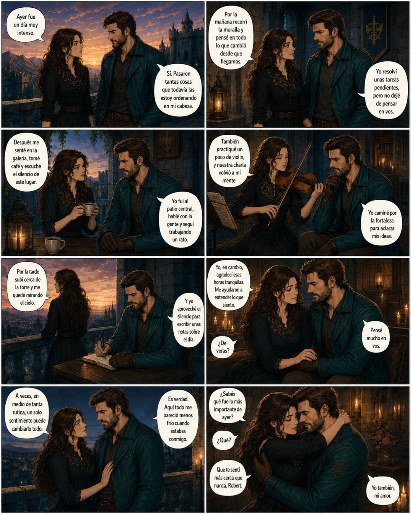
Notas importantes
Pretérito indefinido y vocabulario del tiempo
Resumen
• El pretérito indefinido se usa para acciones que terminaron en el pasado.
• Verbos regulares: -AR, -ER e -IR cambian según la persona.
• Verbos irregulares importantes: ser, ir, hacer, estar y tener.
• Expresiones temporales: ayer, hace un año, cuando era pequeño.
• Vocabulario del tiempo: verano, invierno, primavera y otoño.
• Referencia cultural: los incas y Machu Picchu.
Ejemplos útiles
• Ayer estudié para la prueba.
• Hace un año visité Machu Picchu.
• Cuando era pequeño, jugaba al fútbol.
• En verano hacía mucho calor.
• Los incas construyeron caminos importantes.
Recuerda practicar cada día para recordar mejor.
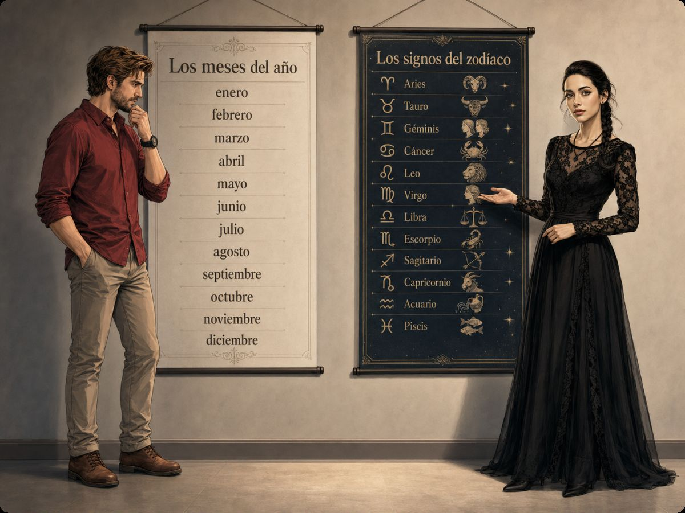